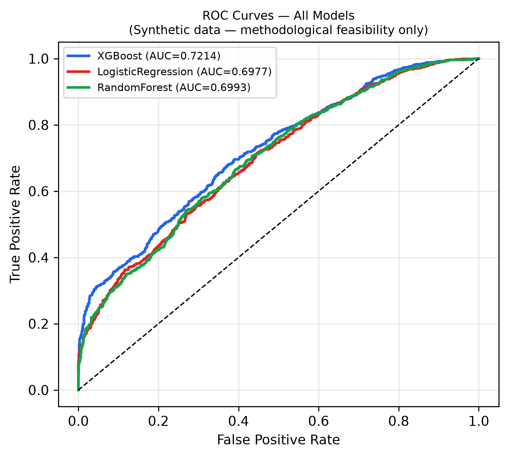
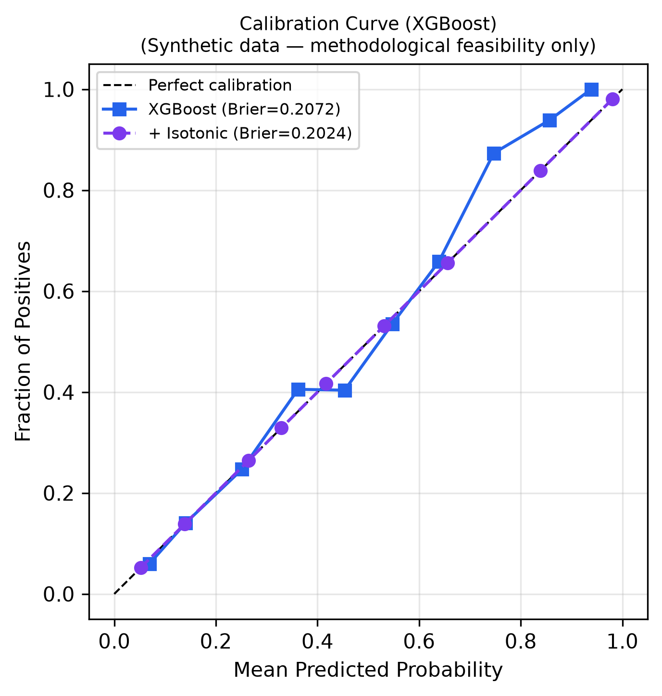
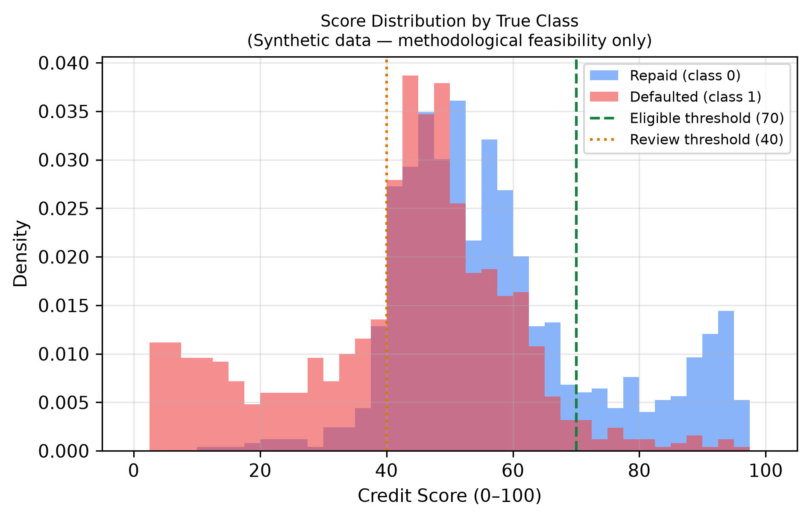
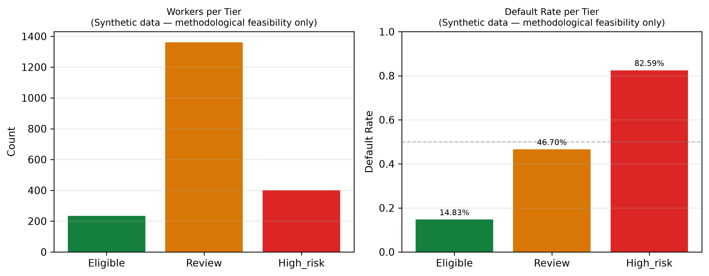
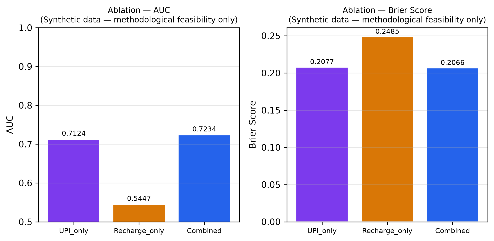
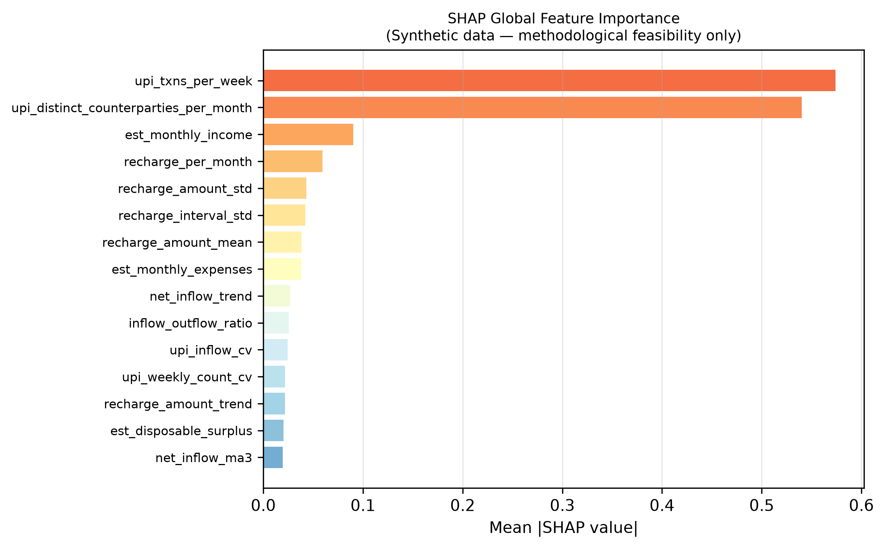
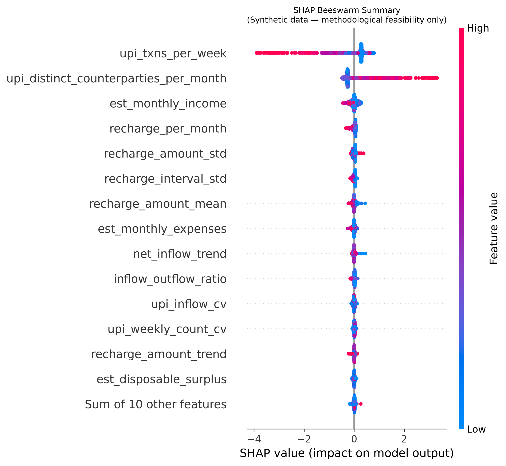
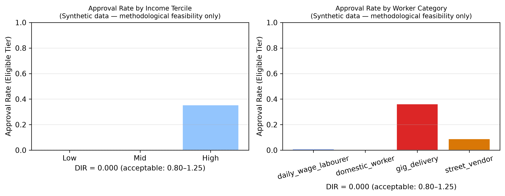
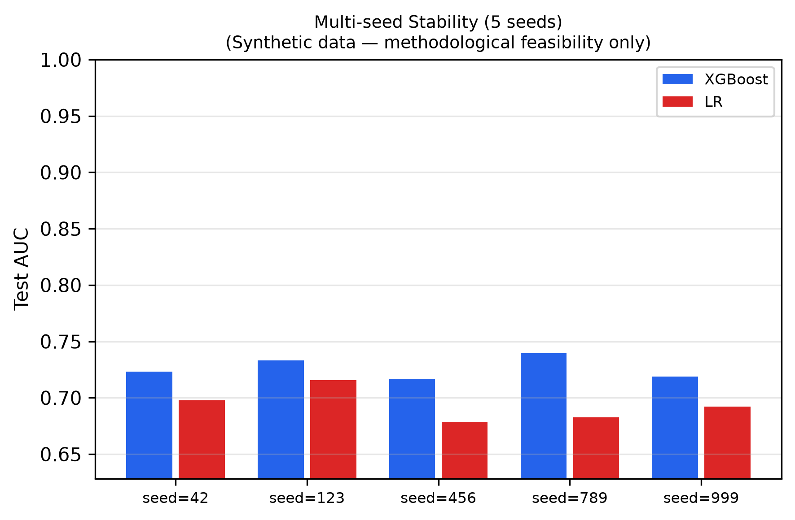

Per RBI Master Direction RBI/DoR/2021-22/89, total monthly loan repayment obligations across all lenders must not exceed 50% of verified monthly household inflow.
TreeSHAP Actuarial Score Attribution
Local linear slope conversion: Score Delta = φi × [-100 · p̂(1 - p̂)]
| Behavioral Signal | Observed Value | SHAP Log-Odds (φ) | Score Impact | Actuarial Finding |
|---|
Empirical Benchmark Evaluations & Comparative Baselines
Complete empirical performance results on held-out synthetic test set (N=2,000, 80/20 stratified split). Evaluates discrimination (AUC), accuracy, precision, recall, F1, and probability calibration error (Brier score).
| Model Architecture | ROC AUC | Accuracy | Precision | Recall | F1 Score | Brier Score |
|---|
| Decision Tier | Score Boundary | Applicant Count | Default Rate | Mean Score |
|---|
| Feature Modality | ROC AUC | Brier Score | 5-Fold CV AUC | Cold-Start AUC |
|---|
| Architecture | Seed 42 | Seed 123 | Seed 456 | Seed 789 | Seed 999 | Mean ± Std Dev |
|---|---|---|---|---|---|---|
| XGBoost (Proposed) | 0.7234 | 0.7331 | 0.7169 | 0.7388 | 0.7192 | 0.7263 ± 0.0087 |
| Logistic Regression Scorecard | 0.6977 | 0.7159 | 0.6781 | 0.6833 | 0.6917 | 0.6933 ± 0.0135 |
| Published Study | Target Population | Data Modality | Reported AUC | Brier Score | Key Architectural Difference |
|---|
Diagnostic Visualizations & Model Explainability
High-resolution empirical figures generated during research simulation. Click any chart to view enlarged high-resolution view.

Fig. 2(a): Receiver Operating Characteristic Curves
XGBoost achieves 0.7214 AUC on the held-out test set, outperforming Logistic Regression (0.6977) and Random Forest (0.6993).

Fig. 2(b): Reliability Curve (Pre vs Post Isotonic)
Isotonic calibration lowers Brier score from 0.2072 to 0.2024, ensuring predicted probabilities align with true default frequencies.

Fig. 3: Score Distribution by True Class
Bimodal density separation showing default concentration below score 40 and repaid borrowers clustered in score 70+.

Score Tier Monotonicity & Allocation
Demonstrates monotonic risk progression: Eligible (14.8% default), Review (46.7%), and High Risk (82.6%).

Fig. 4: Modality Ablation (UPI vs Telecom)
Shows that UPI drives the bulk of discrimination (AUC 0.7124), while recharge adds an incremental +0.0110 AUC lift.

Fig. 6: Global TreeSHAP Feature Importance
Weekly UPI transaction cadence and distinct counterparties dominate global attribution, followed by income and recharge frequency.

SHAP Beeswarm Distribution Plot
Visualizes positive vs negative impact directions across individual workers; high transaction volume reduces default odds.

Fig. 5: Subgroup Approval Rates (Disparate Impact)
Illustrates severe limitation: fixed 70-point cutoff results in 0.0% approval for low/mid income tiers (Disparate Impact Ratio = 0.0).

Five-Seed Model Stability Comparison
Confirms tight standard deviation across seeds (0.7263 ± 0.0087), proving results are not artefacts of random sampling.
Simulated Applicant Cohort Registry
Explore individual simulated worker profiles from the 10,000 applicant cohort. Click "Assess in Terminal" to load an applicant's exact 90-day behavioral telemetry into the live underwriting workbench.
| Applicant ID | Trade / Cohort | Weekly UPI Txns | Est. Monthly Inflow | Inflow Volatility (CV) | Recharge Freq | Recharge Interval Std | Historical Outcome | Underwriting Action |
|---|
Regulatory Framework, Fair Lending & Governance Disclosures
Analysis of legal alignment with Reserve Bank of India (RBI) microfinance regulations, the Digital Personal Data Protection (DPDP) Act, and transparent reporting of model limitations and disparate impact risks.
RBI Microfinance Framework (2022) Alignment
RBI/DoR/2021-22/89 Master DirectionThe Reserve Bank of India mandates that a household’s total monthly repayment obligation across all lending institutions cannot exceed 50% of monthly household income.
- Algorithmic Affordability Flag: The system automatically extracts recurring debit patterns (EMI signatures) and computes whether the proposed micro-loan tranche violates the 50% statutory threshold.
- Advisory Integration: The score acts as an advisory input into the NBFC's board-approved underwriting policy, ensuring compliance rather than bypassing statutory caps.
DPDP Act 2023 & Account Aggregator Architecture
Consent-Driven Financial Data IngestionUnder the Digital Personal Data Protection Act (DPDP) 2023, access to payment logs requires purpose-bound, revocable borrower consent.
- RBI Account Aggregator (AA) Gateway: Real production deployments ingest UPI statement trails strictly through licensed Account Aggregator sandboxes (e.g. Setu, Finvu).
- Time-Bound Validity Windows: Each credit score carries a time-bound cryptographic validity window (e.g. 30 days), preventing stale data utilization without fresh consent.
Fairness Audit & Disparate Impact Failure (DIR = 0.0)
Transparent Limitation Disclosure (Sec. V-D)The research exposes a critical operational failure: a single global 70-point cutoff threshold results in severe disparate impact against lower-earning informal cohorts.
- Disparate Impact Ratio = 0.0: Approval rates for low and mid-income terciles are 0.0%, compared to 35.4% for high-income workers. By cohort: Gig Workers (36.2%), Vendors (8.9%), Daily Labourers (0.8%), Domestic Workers (0.0%).
- Remediation Strategy: The paper explicitly recommends group-aware calibration or expanding the human Review tier (40–69) to avoid algorithmic exclusion.
Thin-File & Cold-Start Research Findings
Applicants with <15 Lifetime UPI TransactionsFor sparse-history workers (1,042 workers in the test cohort), alternative data models struggle to exceed random chance.
- Performance: UPI-only models achieve AUC 0.5126 (essentially random). Combining telecom recharge lifts AUC to 0.5468.
- Policy Conclusion: The authors candidly report that recharge data does not fully solve the cold-start challenge. Such applicants should be routed to progressive laddering loans (e.g. ₹5,000 PM SVANidhi tranche 1) rather than scored algorithmically.